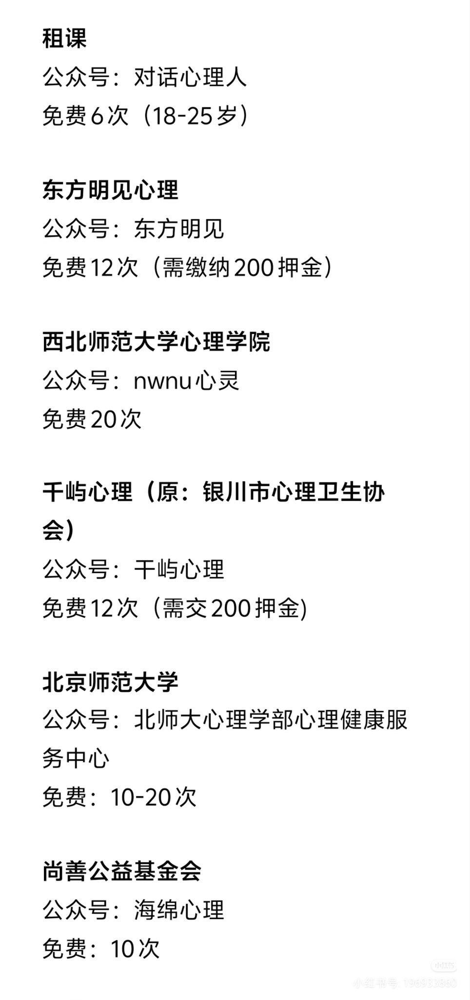
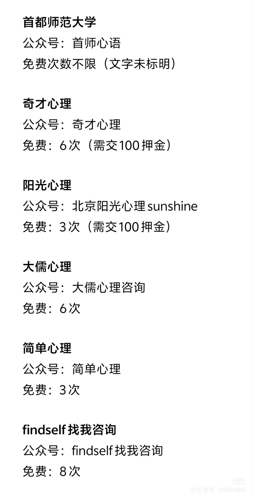

RT @miumiu_14_dd: @Crab2046123 @nakamori222 其实有一些公益的资源，我已经通过找到的公益咨询做了13+次的全免费咨询。如“东方明见心理咨询”/“玫瑰少年计划”等。还有一些个体执业咨询师在小红书/微信公众号等平台会发布低价/公益招募，从免…



@Crab2046123 @nakamori222 其实有一些公益的资源，我已经通过找到的公益咨询做了13+次的全免费咨询。如“东方明见心理咨询”/“玫瑰少年计划”等。还有一些个体执业咨询师在小红书/微信公众号等平台会发布低价/公益招募，从免费到1、200一次都有。真的很推荐有心理困扰的朋友去搜搜看，尝试一下。 https://t.co/YSpvPikjJ1